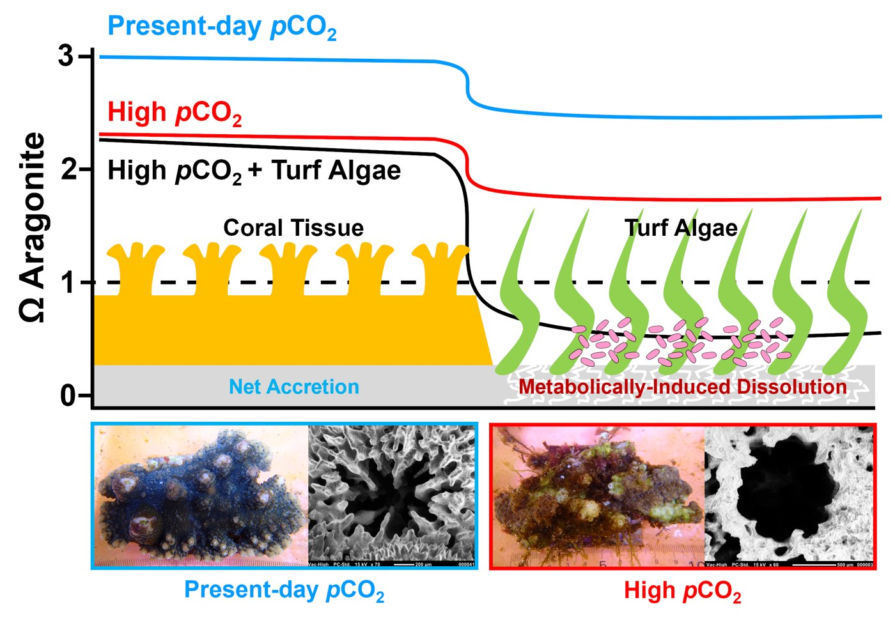

Turf algae dissolve coral skeletons under ocean acidification
As CO2 rises, turf algae gain the upper hand over corals. We grew standardised coral-turf "microcolonies" of two corals, Acropora solitaryensis and Porites heronensis, in aquaria and at the volcanic CO2 seeps off Shikine Island. Turf algae won the competition under high CO2, and their activity acidified the thin layer of water over the exposed coral skeleton, so the skeleton passively dissolved. As turf spreads, reefs could tip towards net dissolution.
Abstract
Ocean acidification (OA) is expected to lower seawater pH and aragonite saturation (Ωarag), altering reef carbonate budgets through combined effects on calcification, dissolution, and species interactions. However, OA may benefit low-profile algal turfs, comprised of several epilithic species, that tend to settle onto exposed coral skeletons following disturbance events. Despite the future predicted prevalence of turf algae across ecosystems, their contribution to future reef ecology and carbonate budget remains poorly understood. Coral-turf algae competition and carbonate dynamics under future high pCO2 conditions were investigated by using standardized coral-turf algae microcolonies representative of future community-level interactions. Experiments were conducted using two coral species, Acropora solitaryensis and Porites heronensis, in both controlled aquaria and a natural CO2 seep environment in a marginal coral community. Turf algae were competitively favored under high pCO2 conditions, highlighting the importance of biotic interactions in shaping future reef communities. The local pH microenvironment under the turf, resulting from associated biological activity, combined with OA, promoted the chemical passive dissolution of the coral carbonate skeleton. Turf proliferation under climate change and OA will influence carbonate budgets through a combination of biotic and abiotic mechanisms, contributing to the shift of reefs towards a state of net dissolution.
Heitzman, J.M., Iijima, L., Mitushasi, G., Spatafora, D., Wada, S., Harvey, B.P., Kurihara, H., Agostini, S. (2026). Global Change Biology Communications 1(3), e70043. doi:10.1002/gcb4.70043